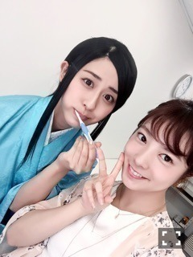

| 2016/05 19 Thu | 斎藤ちはる スカイダイビングも、実はやりたい。でもスキューバダイビングは、もっとやりたい。(´>∀<｀)ゝ |
ちはるーむへようこそ(﹡ˆ ˆ﹡)
わー！びっくり！！！！
スカイダイビングって書いてた！！！
わー！びっくりした。。
送って投稿されてから、
わ！って気づいて、
急いで訂正してもらったんだけど
コメントにたくさん間違えてるよ。
ってきてた。。(｡-_-｡)
ばれてた。。(｡-_-｡)
訂正されてるから、なんのこっちゃ！？
って方もいるよね。そうだよね。
だけどね、何が起こったか説明しない。
だって恥ずかしいもん(｡-_-｡)
そう。私はスキューバダイビング部！
魚と共に海を泳ぐの。人魚のように。
でも正直一度はスカイダイビングもしてみたい。
高いところ、絶叫系、だーいすき♡
そう密かに思ってたら文字に表れたのかも。。
改めまして。
暗落亭苦来でございます。
今日はじょしらく弐、3公演目！！
玲香が落語の日で、
玲香が本番中頭が真っ白になったところを琴子が助け拍手が沸き、
カーテンコールの最後に玲香にサプライズでケーキを渡し、
玲香のことが大好きな優里とまいまいが観に来てくれて、
今日は玲香Dayでした！笑
手寅ちゃんDay。
なんか、改めて思ったのが、
チーム「く」の、チームワークがとても良い！
チームの関係性がとても良い！ということ。
1、いい意味でみんなマイペースで自由人だからそこの均衡が保たれてるのかもしれない。
2、鍋パをしたから、仲が深まったのかもしれない。
3、それぞれが演技が好きで頑張り屋だから周りを見る余裕や、助ける余裕ができたのかもしれない。
どれが理由なのかはわからないけど
とても良い関係性で、とても良い環境でできてます。
チーム「く」でよかった！
あと2公演でこの5人で舞台に立つことがないって考えるととても悲しい。
もっと長くやれたらな。寂しいな。
でもこれが舞台の良いところだよね！
もう二度と同じ一瞬はない。
どんな瞬間でも一期一会で、
それは舞台にいる私たちと、
観に来てくれているファンの方々で
一緒に創り上げていくものなんだ。
この一期一会の瞬間が私は大好き！！
みんなほど演技がものすごく上手ってわけではないけど
演技が好きで、舞台が好きなのは負けないよ\( ˆoˆ )/
今まで言ったことなかったけど、
私は大学で演劇の勉強をしているんだ。
何のために大学に行きたいんだろうって考えた時に、
何が自分のためになるのかって考えた時に、
大好きな演技の、舞台のことを学びたい！って思ったの。
私は演技も初心者だし舞台経験もなかったけど
やっぱり学べば学ぶほど舞台の素晴らしさを感じるよ。
一期一会の空気。
一瞬一瞬が消えていく儚さ。
好きだなあ。
これからも舞台のお仕事できたらいいな。
いい機会がありますように。
演劇は乃木坂のお仕事にも通づるものがある！
大学で勉強頑張ってるよ。
フランス語、やっぱり難しいよね(｡-_-｡)
先生が、2020年東京五輪で活躍できるようになれるように頑張って教えるからね！って言ってくれた。
身になるように頑張ろう(﹡ˆ ˆ﹡)

歯磨き中に優里と。らぶ。
仲良し真洋。らぶ。
禁止令は出てるけど、
止められれば止められるほど
食べたくなる。買ってしまう。食べてしまう。
小学生か。
斎藤ちはる